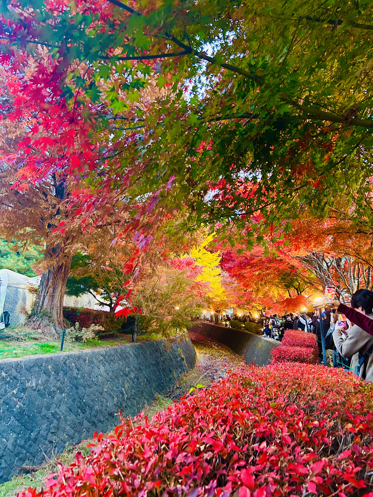
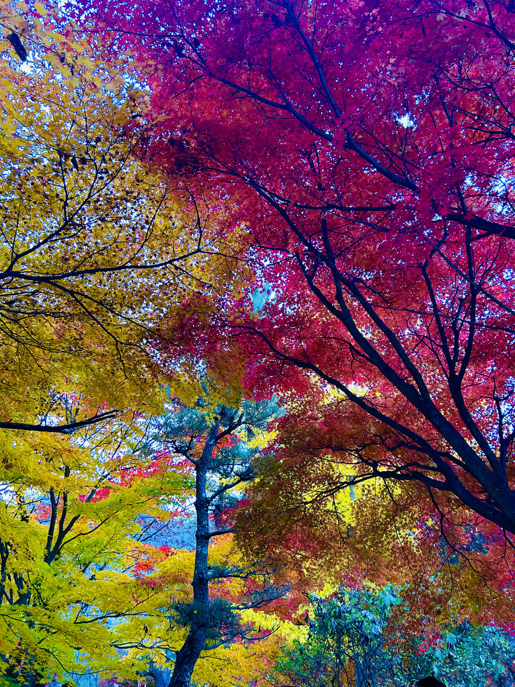
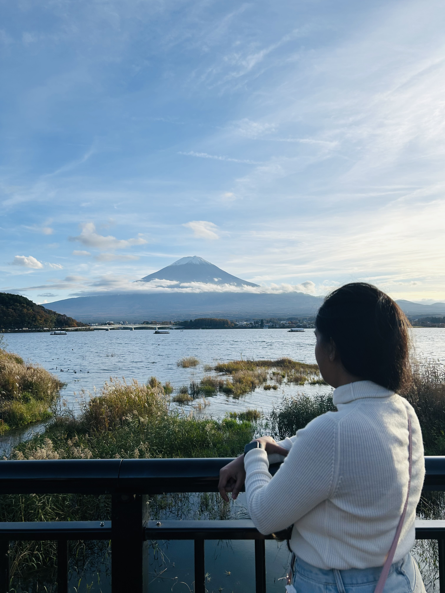
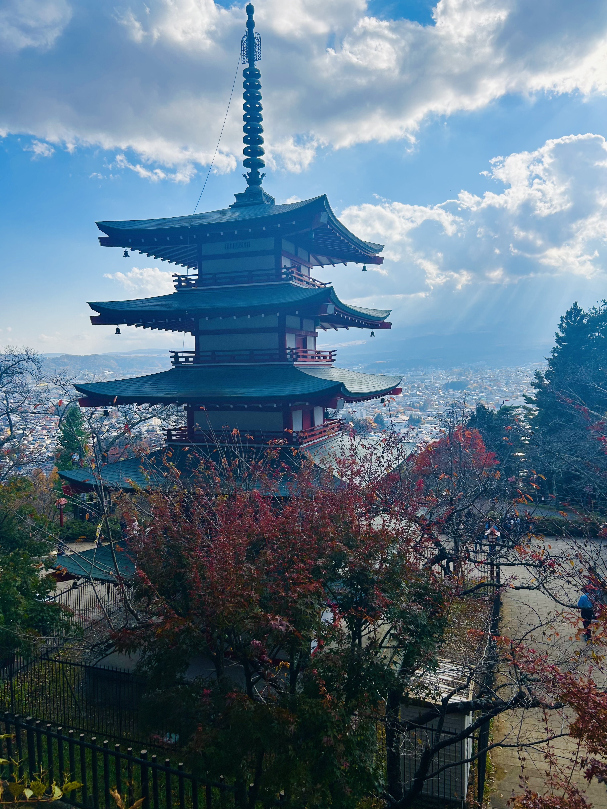
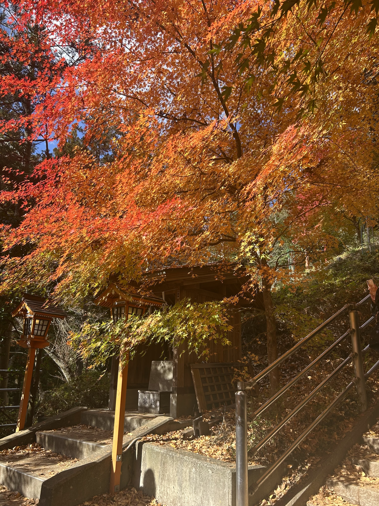
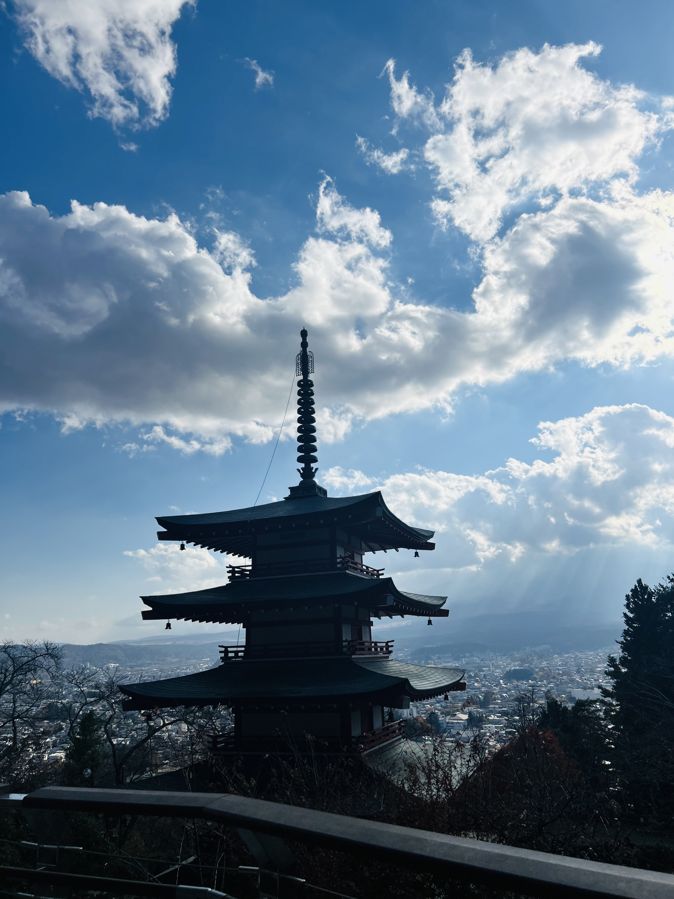

The Momiji Corridor is the centerpiece of the Kawaguchiko Autumn Leaves Festival, famous for its tunnel of vibrant red, orange, and yellow maple trees. Walking through this natural tunnel is a truly magical experience, especially in the evening when the trees are illuminated from sunset until around 10 PM, creating a glowing, dream-like atmosphere perfect for photography and peaceful strolls.
Highlights & Things to See:
Evening illuminations: Soft lights make the maple leaves shimmer in warm tones.
Reflections: On calm days, the nearby lake reflects the autumn colors, offering stunning photo opportunities.
Local food stalls: Seasonal snacks and warm drinks are available during the festival.
Photography spots: Ideal for both casual snapshots and professional photography.
How to Access:
By Train: Take the Fujikyu Railway to Kawaguchiko Station, then a short local bus or taxi ride to the corridor.
By Bus: Direct highway buses are available from Shinjuku or Tokyo Station to Kawaguchiko Station.
By Car: Approximately 2 hours from central Tokyo via the Chuo Expressway. Parking is available near the festival area but can be crowded on weekends.
Best Time to Visit:
Peak autumn colors: Early to mid-November
Evening visit: For illumination, aim for sunset to enjoy the magical lighting.
The Momiji Corridor is a must-see for anyone visiting Kawaguchiko in autumn, offering a perfect combination of natural beauty, festival atmosphere, and iconic seasonal views.

Scenic Views Around Lake Kawaguchiko
Autumn trees line the lake’s shores, offering peaceful walks and stunning reflections of Mount Fuji on calm days — a true seasonal masterpiece. The vibrant mix of red, orange, and golden foliage along the water creates a serene environment perfect for relaxing, photography, and enjoying nature.
Highlights & Things to See:
Lake reflections: Calm mornings and evenings provide perfect mirror-like reflections of Mount Fuji framed by autumn colors.
Walking & cycling paths: Scenic trails around the lake allow leisurely walks or bike rides.
Boat rides: Enjoy the autumn view from a traditional sightseeing boat on the lake.
Photography spots: Ideal for capturing panoramic views of Mount Fuji with colorful trees along the shoreline.
Nearby attractions: Visit nearby parks, shrines, and cafes while enjoying the autumn scenery.
How to Access:
By Train: Take the Fujikyu Railway to Kawaguchiko Station. From there, local buses or taxis can reach various lakeside spots.
By Bus: Highway buses from Shinjuku or Tokyo Station directly connect to Kawaguchiko Station.
By Car: About 2 hours from Tokyo via the Chuo Expressway. Parking is available at popular lakeside viewing spots.
Best Time to Visit:
Peak autumn colors: Early to mid-November
Morning or late afternoon: For calm waters and ideal reflection shots of Mount Fuji.
Lake Kawaguchiko’s autumn scenery offers a perfect combination of tranquility, natural beauty, and unforgettable views, making it a must-visit spot during the fall season.


Arakurayama Sengen Park
From this elevated viewpoint, visitors can enjoy one of Japan’s most iconic scenes — Mount Fuji perfectly framed by vibrant autumn leaves. The park is especially famous for the combination of the five-storied Chureito Pagoda, the colorful foliage, and Mount Fuji in the background, creating a quintessential Japanese autumn image.
Highlights & Things to See:
Chureito Pagoda: A popular photography spot offering the classic Mount Fuji and autumn leaves view.
Observation Decks: Several viewpoints provide panoramic vistas of the surrounding mountains and Lake Kawaguchiko.
Autumn Colors: Maple and ginkgo trees turn brilliant shades of red, orange, and gold.
Walking Trails: Stairs and trails lead visitors through serene forested areas and scenic spots.
Photography Opportunities: Sunset and early morning light are ideal for capturing stunning autumn landscapes.
How to Access:
By Train: Take the Fujikyu Railway to Shimo-Yoshida Station. From there, it’s a 10–15 minute walk or taxi ride to the park entrance.
By Bus: Local buses from Kawaguchiko Station stop near the park.
By Car: Approximately 15–20 minutes from Kawaguchiko Station. Limited parking is available near the park entrance.
Best Time to Visit:
Peak autumn colors: Early to mid-November
Time of day: Sunrise or late afternoon for the best light and fewer crowds
Arakurayama Sengen Park is a must-visit for photographers, nature lovers, and anyone seeking a serene and iconic view of Mount Fuji surrounded by brilliant autumn foliage.



Similar Places to Explore
City Foliage
Showa Kinen Park
Catch endless ginkgo boulevards and cozy autumn walks just outside central Tokyo.